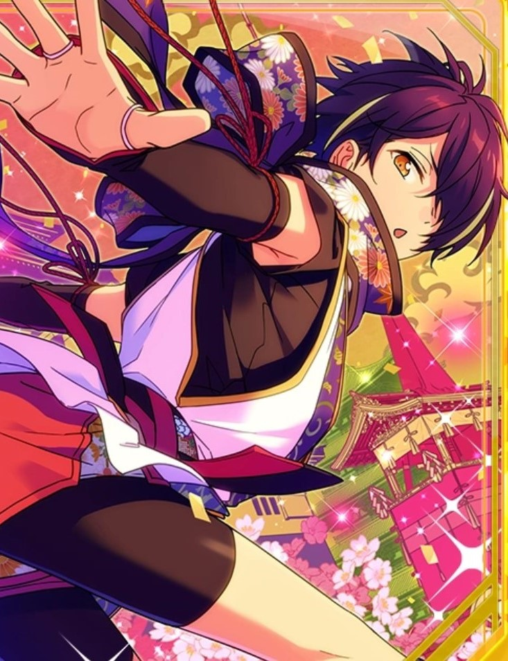
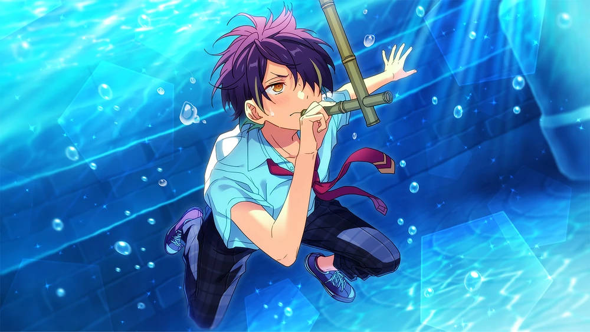
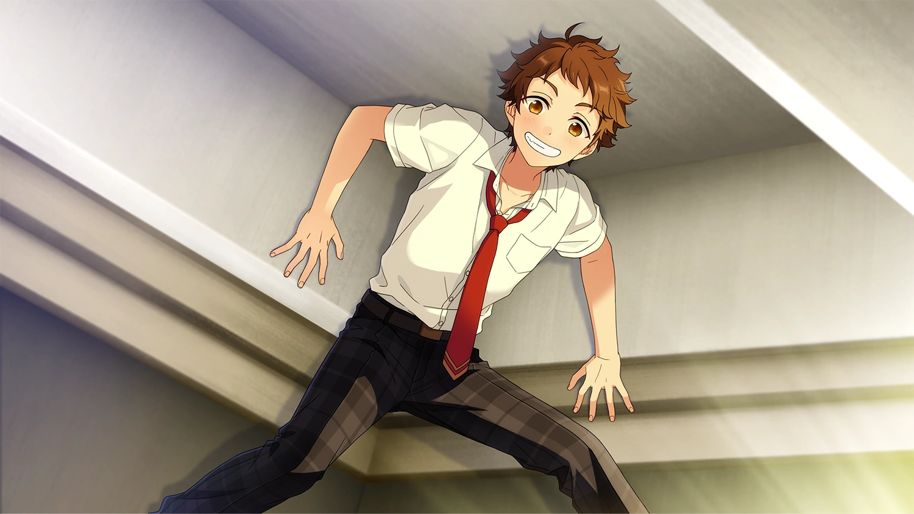

Air Ride



Chapter 1

~……♪
(Heheh~ I feel like I’m in top shape! Thanks to the ninja provisions I ate, I could do anything~♪)
(The path of a ninja is by no means simple, but…)
(If I make the ninja training too harsh, any member that’s joined the Ninja Association might quit because the difficulty’s too steep.)
(On the other hand, if I put a bigger focus on lecturing the material, it’ll get boring. Hm~m, it’s tough being the club head.)
(Well, I’m the only member of the Ninja Association so far, so...)
(If this were a popular club, a lot of people would surely bring endless worries/mental exhaustion for a club head!)
(I'm a teeny bit jealous, though. If the Ninja Association could get even three members at the very least, it could be promoted to club status.)
(At this stage, still yet a dream. Today marks another day of just me devoting myself to Ninja Association training…)
(No, no! Don't lose heart!)
(I’ll continue training with the same enthusiasm I had when I started Ninja Association!)
(As long as I do that, I'm sure someday I'll meet someone with the same aspirations as myself!)
(I will show the world the splendor of ninjas...☆)
Uu~ I’m so bored. I don’t have any track and field activities today, so I can’t run. My frustrations are startin’ to build up~...?
(Huff, huff)…♪
Huh? Someone’s out there running on the activity grounds? Is someone from the track team? Uu~ I can’t see very well. Lemme get a little closer. Da~sh…☆
(Oh, that was a new record! The fundoshi[^] around my waist didn’t touch the ground, even after one lap!)
(The wind direction’s excellent today, so I’ll keep at it like this for two or three more laps~♪)
Eh-hem, I caught up! I thought I saw someone, it was Shinobu-chan! Shinobu-chan, wanna race?
The track and field club didn’t have any activities today, so I’m feelin’ pretty bleh.
But Shinobu-chan’s here! There aren’t any track members running around, so we won’t end up bumpin’ into anyone. Wahoo~☆
Eek!?
(Wh— Wh-Wh-Who is this!? … Oh, now that I take a good look at him, it’s just Tenma-kun, from my class.)
(No ordinary person is able to keep up with my ninja strides.)
(... Well, Tenma-kun does do track and field, so his speed is phenomenal.)
(That aside, at this rate I’ll end up having to race Tenma-kun! We may be classmates, but that doesn’t make us close.)
(What should I do? Should I come up with an excuse to decline? But he went to the trouble of inviting me~? Uuu, I’m starting to regret my lack of communication skills!)
Dash, dash, daaash…♪
Eh? T-Tenma-kun…?
(Tenma-kun ran off and left me behind. It feels like once he breaks out into a run, he can't be stopped.)
(It’s like he doesn't even notice I'm not there with him...?)
(I stopped in my tracks being so surprised by Tenma-kun's appearance, so my fundoshi dropped to the ground.)
(I’ll call it for today's training and see myself out quietly.)
Tenma-kun, I'm going home.
Thank you for the invitation, but my training ends here.
~……♪
(Oh, my voice is too quiet, it doesn’t seem he heard me at all! …Tenma-kun is just too busy having a blast running, huh?)
(I also love ninjas so much I just can’t help myself, so I can kind of understand how he feels.)
(... Mm. I can’t just give up after one failure and go home, I’d be a complete disgrace as a ninja! I'll tie my fundoshi back around my waist and go back to training!)
Hum, humhumm~♪ I knew I’d have fun getting a run in! The wind feels so gooood~
Dontcha think so too, Shinobu-chan~? … Wait, where’d he go? Shinobu-cha~an, answer me!
I-I kept you waiting. You’re so fast, I had a hard time catching up with you, Tenma-kun. (Wheeze, huff!)
Uu~ I left you behind. I’m sorry that I didn’t notice.
I just started running and couldn’t stop. It’s like being in a car and slamming the gas.
But since I don’t have any brakes, I keep running until I bump into someone. That’s how I get myself hurt a lot, but injuries are just a man’s badge of honor, right~...?
Once, I got so absorbed in my ninja training that I couldn’t get down from a tree~ They say it’s important not to get too absorbed in things, else you’ll get carried away.
Shinobu-chan, you’re so smart! I'll try running without getting too absorbed in it too.
Dash… Uuwhoa!?
You ran straight into a fence!? A-Are you okay~? If you’re injured, let’s go to the infirmary!
Nahh, nothin’ a little spit can’t fix. (Spitting)...♪
That’s so primitive… I get hurt while I do ninja training too, but injuries shouldn't be underestimated.
Both you and I are idols, so it’d be a big deal if we ended up with a scar on our face~?
At any rate, it's probably best to call the race here, Tenma-kun.
It looks like students are coming over here for their club activities. They’re coming in droves all in uniform.
The track and field club has no activities today, so it’s probably a different club? Uu I didn’t see the run through all the way though, it’s bothering me.
I’m gonna run to the school building. Wanna join me, Shinobu-chan?
N-No, thanks, I’m good.
That right? Well, I'm gonna go then~! Bye-bye~☆
Hey! If you run by the school buildings, the teachers are gonna find out and get mad... Agh, he ran off before I could warn him.
Chapter 2
……
(Ohh, Garden Terrace is packed at lunchtime like usual~.)
(I was in a really good and excited mood today since I got my allowance and was thinking of splurging with my Garden Terrace lunch today! But…)
(It’s suffocating when it’s this crowded.)
(I didn't bring a boxed lunch, so if I don’t eat here, I'll have to go to the school store. It’ll probably be crowded there too, though...)
(I might not even be able to get whatever bread is left over.)
(I’m already in line for the ticket machine. That’s not to mention the question of finding a free seat, but I'll think about that after I buy my meal ticket.)
Uhyaa!? S-Someone just patted me on the back! But I'm not the kind of person who has many good friends!
Ah, maybe they were reminding me not to step out of line? Pardon me, pardon me! I'll pay attention, so please forgive me~...?
Huh? Transfer Student-dono? Could it be that you recognized me as an acquaintance and approached me? I'm pleased~♪
Are you here for lunch too?
Hmm. You forgot to make a lunch for yourself, so you thought you’d have something at the Garden Terrace for once, and so you’re waiting in line for the ticket machine?
I’m here because I have extra spending money. The portions at the Garden Terrace are just so big, sometimes I can’t even finish it all.
And so to prepare, I skipped breakfast today~
Thanks to that, I’m starving. I was on pins and needles in class wondering if my tummy would growl and be heard.
And since I couldn't really concentrate on the lesson, I ended up getting scolded by the teacher!
Kunugi-sensei's lectures are long. I was worried I’d be late and miss lunch.
Huh? “Since you’ve decided what to eat, how about you order for me,” Transfer Student-dono?
Hmm, I see. You’d rather I reserve a seat for us instead?
Ordering is certainly only half the battle – if there’s nowhere to sit after you get your food, you’ll just have to search high and low with a tray in your hand.
Umm, does that mean you’re saying you want to have lunch with me?
Er, it’s not that I hate it or something, not at all! If anything, I’d be more than happy to have you. I'm happy, I'm jumping for joy! (Humming happily)♪
Well then, I’ll go hunt us some seats! The meals are in your hands, Transfer Student-dono☆
(Hmm...? Well, it is lunchtime, so it’s a given there’s not a singular available seat in sight. Should I ask to share a table with someone we don’t know?)
(Ah, a seat just opened up at just the right time! This is a gift from god, it’s mine~!)
(Ahh, I was too late to it!)
(Uuu~ I’m supposed to be a ninja. I don't have the qualification to call myself such if I lose a contest in speed. Next time, I’ll be sure to secure it!)
HaHa~♪ HiHi~♪ HaHiHuHeHo~...♪
Ahaha. Sora-chan’s in a good mood! I’ll sing with you too, HaHiHuHeHo~……♪
Mitsu-chan’s good at it~ Two’s better than one, the more people there are, the more fun it is~ Sing with Sora and dye the world with the colors of the rainbow! The colors of a rainbow are infinite~♪
Hm? And I was wondering why it was so lively. So it was Sora-kun and Mitsu-kun, huh? Heyo~☆
HuHu~ it’s Hina-chan! There’s a sweet smell coming from Hina-chan~ A bittersweet spring color, milk and strawberry… Is it shortcake?
Right on the money~! The Garden Terrace gives out great heaps of food, but I always got room for dessert.
Are you guys about to have lunch? If you can’t find a seat, wanna sit here?
It’d be a big help, but is it really okay?
We just finished up. You shouldn’t hog seats when it’s so packed, so don't think twice about sitting.
HeHe~ Sora shows his gratitude when he is shown generosity! Thanks~♪
Ahaha, don’t mention it.
Look, Aniki. We ate so much that the table’s filled with plates. Don’t tell me you haven’t had enough to eat yet.
With how much we’ve gorged on, any more surely would be too much, right?
We’re in our growth period. No matter how much I eat, I’ll never be full~
Well, anyways, I don’t wanna totally stuff myself silly, guess I’ll stop short of stuffing myself…☆
Welp, we’ll be off, then.
Hina-chan, Yuu-chan. Bye-bye~ Until next time…♪
……
Mitsu-chan? Is something on your mind? Sora is following Mitsu-chan’s gaze!
Mm~ There are a lot of people so everything’s all jumbled, is that color Shinobu-chan’s?
Yeah, it’s Shinobu-chan. I thiink something’s wrong, he’s looking around all restless.
It’s good he came for lunch, but maybe he’s having trouble finding a seat?
Sora-chan, I’m gonna go talk to Shinobu-chan. I’ll put our orders in too while I’m at it. Whaddya wanna eat?
HoHo Sora wants to eat the omurice set! Omurice is packed with happiness~ Its fluffy and creamy roundness is absolutely delicious!
Ahaha, got it~☆ I'll dash on over and put the order in, so just wait a sec. Dash, da~sh...♪